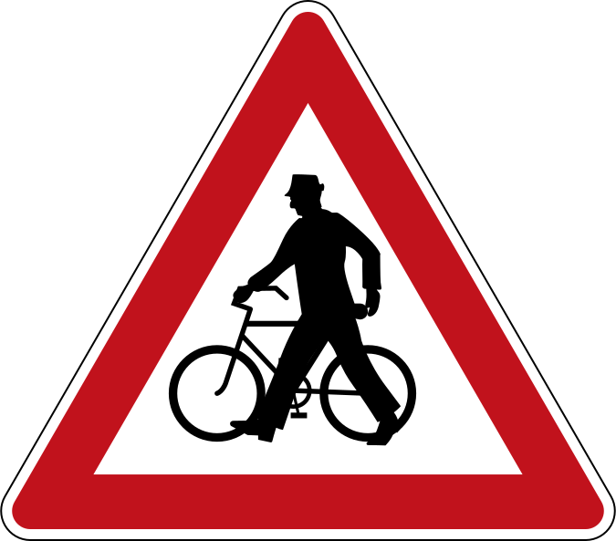
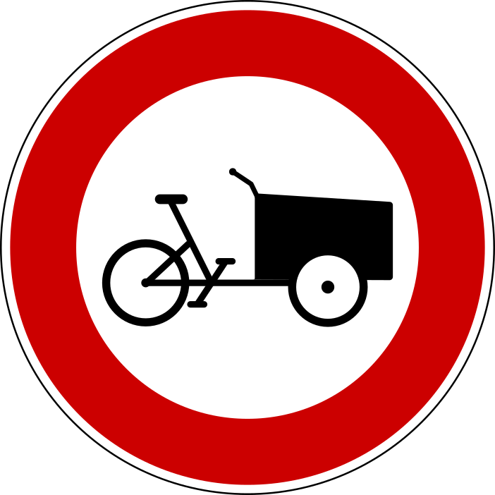
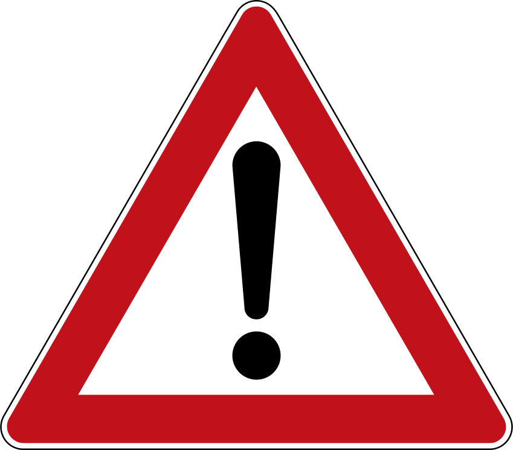
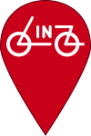
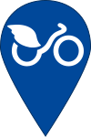
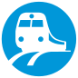

Übersicht
Entspannt durch Klagenfurt, Linz, Rheintal, Schwarzatal, Steyr und Wien
Viele Wege führen zum Ziel. Finden Sie Ihren optimalen Weg durch die Stadt mit der Radlkarte der Radlobby. Auf zu neuen Ufern, unbekannten Gegenden, und neuen Alternativen zu Ihren alltäglichen Routen.
Farbe = Gemütlichkeit
- Gemütlich
- Durchschnittlich
- Stressig
Strichstärke = Relevanz
- Hauptrouten
- Nebenrouten
Spezielle Eigenschaften
-
Einbahn
- Unbefestigt (oder sehr uneben)
-
Steil
 Fürs Radeln hilfreiche Orte können rechts oben in den Kartenebenen
eingeblendet werden.
Fürs Radeln hilfreiche Orte können rechts oben in den Kartenebenen
eingeblendet werden.
Die Radlkarte stellt sich vor
Die Radlkarte der Radlobby ist eine kostenlose Online-Orientierungshilfe, mit der Sie Ihre Fahrten mit dem Fahrrad schneller und gemütlicher gestalten können. Sie ist jederzeit im Browser bereit, ob am Smartphone, Tablet, oder PC.
Wegenetz
Ein alltagstaugliches Wegenetz spiegelt unsere langjährige Erfahrung des Alltagsradelns und unsere Ortskenntnis wider. Dieses Netz zeigt, welche Strecken sich am besten fürs Radeln eignen. So hilft Ihnen die Radlkarte beim Finden von Routenvarianten zwischen Ihren Zielen. Die Abwägung zwischen Direktheit/Schnelligkeit und Gemütlichkeit/Sicherheit liegt dabei ganz bei Ihnen: ist noch genügend Zeit für eine entspannte Strecke bis zum Läuten der Schulglocken? Ist der nächste Arbeitstermin doch schon näher als gewünscht und Schnelligkeit ist die oberste Prämisse? Geht's gemeinsam mit Ihren Kindern zur Schule oder in den Park?
Sicherheitskategorien
Zur individuellen Entscheidungsfindung sind Abschnitte hinsichtlich unserer (subjektiven) Erfahrung zur Sicherheit bzw. Gemütlichkeit in drei Kategorien bewertet: gemütlich, durchschnittlich, stressig. Wir halten uns dabei nicht zwingend an zum Teil leider lückenhafte Radverkehrsnetze. Die drei Kategorien werden anhand der Farbe unterschieden. Abschnitte, die nur in eine Richtung befahren werden können, sind durch Pfeile markiert:
- Gemütlich (dunkelblau) Vom Autoverkehr getrennter Weg oder Straße mit sehr geringem Kfz-Aufkommen und niedrigen Geschwindigkeiten (z.B. Radwege oder Fußgängerzonen, auch wenn das Vorankommen durch viel Fußverkehr möglicherweise schwierig ist)
- Durchschnittlich (hellblau) Radeln im Mischverkehr mit moderatem und langsamem Kfz-Verkehr (z.B. Tempo 30 Zonen in denen das Tempolimit meistens eingehalten wird) oder baulich getrennte Wege, die aber dennoch Gefahrenstellen mit Kfz haben (z.B. Ausfahrten und Kreuzungen).
- Stressig (orange) Strecken, die für ein vollständiges Wegenetz nötig, aber z.B. aufgrund von starkem Kfz-Verkehr oder beengten Verhältnissen unangenehm sind (z.B. vielbefahrene Schleichwege in Tempo 30 Zonen, Fahrradstreifen eng neben Parkplätzen, Überlandstraßen,..)
Prioritätsstufen
Zusätzlich ist das Wegenetz für mehr Übersichtlichkeit - vor allem bei langen Strecken quer durch die ganze Stadt - in Prioritätsstufen gegliedert. Beim Zoomen in der Karte werden lokale und regionale Nebenrouten nach und nach ausgeblendet bzw. nur dünn dargestellt. Überregionale Routen sind immer dick hervorgehoben.
- Hauptrouten (dick) Hauptrouten - vor allem relevant für längere Strecken
- Nebenrouten (dünn) Ergänzende Routen, Abkürzungen, Zubringer
Spezielle Eigenschaften
-
Einbahn (Pfeile)
Einbahnen, die nicht für den Radverkehr geöffnet sind
- Unbefestigt oder sehr uneben (strichliert) Wegbeschaffenheiten, die unangenehm sein können: beispielsweise nicht asphaltierte Wege (bei Regen) oder sehr unebenes Kopfsteinpflaster
-
Steile Wege (Querstriche)
Wege mit mehr als 5-6% Steigung oder Gefälle (kurze Rampen ausgenommen)
Problemstellen
Punktuelle Probleme sind in diesen Kategorien hervorgehoben:
-
Schiebestelle
Schiebe-Empfehlung beispielsweise bei unübersichtlichen Kreuzungen oder Fahrverboten -
Untauglichkeit
für
Spezialräder
Stellen, die mit Lastenrädern, Rädern mit Anhängern, oder anderen breiten bzw. schweren Rädern umständlich oder gar nicht passierbar sind -
Allgemeine
Problemstelle
bzw. Hinweis
Für eine Beschreibung der Problemstelle bewegen Sie den Mauszeiger über das Symbol bzw. tippen Sie das das Symbol an.
Bike-Sharing, Radgeschäfte und mehr
 Fürs Radeln hilfreiche Orte können rechts oben in den Kartenebenen
eingeblendet werden.
Fürs Radeln hilfreiche Orte können rechts oben in den Kartenebenen
eingeblendet werden.
Details per Klick / Antippen: Adresse, Öffnungszeiten, Website, und mehr.
Kategorien
-


Leihräder
Stationen von Leihradsystemen (Bike-Sharing) mit der Anzahl an aktuell verfügbaren Rädern. Graues Symbol: leer (kein Rad verfügbar). Derzeit unterstützt werden WienMobil Rad, city bike Linz, Nextbike Klagenfurt, und Nextbike Niederösterreich. -

Öffentlicher Verkehr
U-Bahn- und S-Bahn-Stationen sowie Bahnhöfe. -
Fahrradgeschäfte
Verkauf bzw. Reparatur von Fahrrädern sowie Zubehör. -
Reparaturstationen
Fahrrad-Reparaturbereich, in der Regel mit Werkzeug, Luftpumpe und Montageständer ausgestattet. -
Luftpumpen
Frei zugängliche Luftpumpen. -
 Schlauchomaten
Schlauchomaten
Automaten zum Kauf von Fahrradschläuchen. -
Trinkwasser
Öffentlich zugängliche Trinkwasserbrunnen oder -quellen. Achtung: in den Wintermonaten meist geschlossen!
Graue Symbole bedeuten für Leihradstationen, dass kein Rad verfügbar ist. Bei allen anderen Kategorien steht es für derzeit geschlossen / nicht verfügbar / bzw. keine bekannten Öffnungszeiten.
Die Leihradstationen werden von der offiziellen Nextbike API abgefragt und somit minutengenau. Alle anderen Orte sind von OpenStreetMap entnommen und werden täglich aktualisiert.
Viel Spaß beim Erkunden!
Wir hoffen, dass Sie sich mit Hilfe der Radlkarte leichter zurechtfinden und wünschen Ihnen schönes und angenehmes Radfahren. Sollten Sie Verbesserungsvorschläge oder neue Routenvorschläge haben, freuen wir uns auf Rückmeldungen. Sie können Problemstellen (für Wien) auch direkt im Radkummerkasten melden.